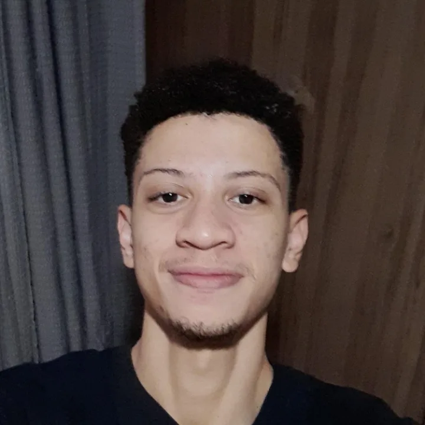

Derick Rufino — Portfólio
Derick Rufino
Desenvolvedor Full-stack
Construo aplicações completas, do app ao banco de dados. Estagiário de Suporte de Banco de Dados & IA na Interfocus Tecnologia.
Graduando · Fatec Marília
Desenvolvimento de Software Multiplataforma
Tecnologias que uso no dia a dia.
Stack
Conheça meus trabalhos selecionados.
Projetos

derickrufino.dev@gmail.com
GitHub
LinkedIn
Contato